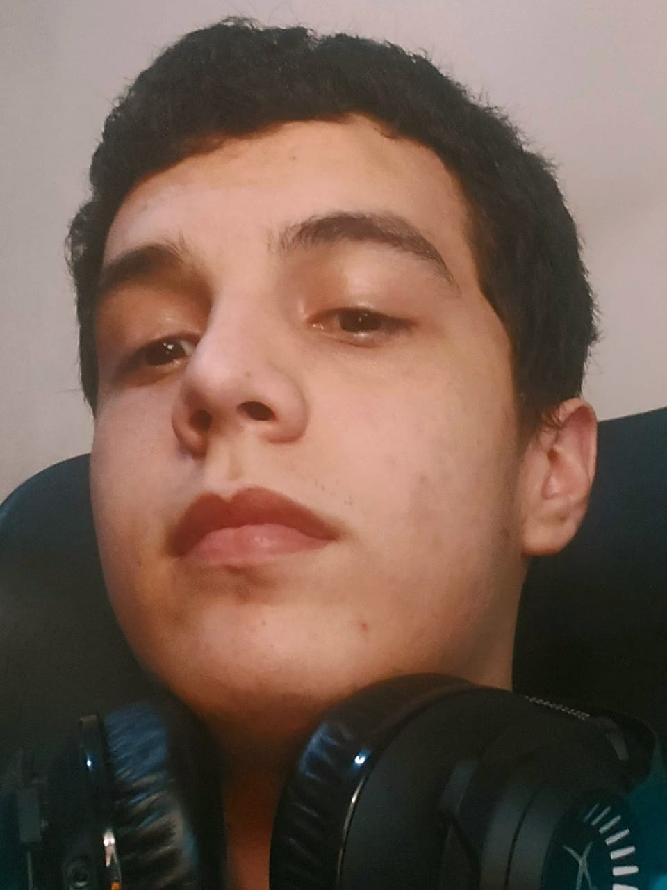

19 anos, solteiro, natural de Franca/SP

E na luz nua eu vi
Dez mil pessoas, talvez mais
Pessoas falando sem dizer
Pessoas ouvindo sem escutar
Pessoas escrevendo canções que vozes jamais compartilharam
E ninguém ousava
Perturbar o som do silêncio
(Simon & Garfunkel, The Sound of Silence)
Sou um jovem timido e introvertido que prefere mais ficar em casa do que qualquer outra coisa e que, estranhamente, tem um grupo de amigos relativamente grande. Solteiro desde sempre e moro com minha família.
Ganhei meu primeiro computador com 9 anos e desde então sou aficcionado por informática. MAs foi somente no primeiro ano do ensino médio que conheci e me apaixonei por programação.